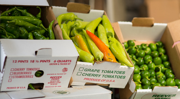
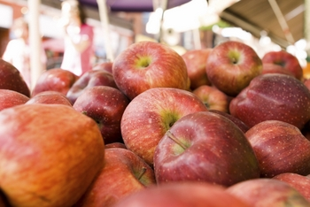

Spring
Fruit: Apples
Vegetables: Green Beans, Lettuce, Onions, Parsnips
Other: Regional grains (freekah, emmer, faro, einkorn), honey, jam, fruit juice, cider.
Summer
Fruit: Apples, Blueberries, Cantaloupe, Cherries, Currants, Peaches, Plums, Strawberries, Raspberries
Vegetables: Asparagus, Beets, Beet Greens, Broccoli, Cabbage, Carrots, Cauliflower, Celery, Collard Greens, Corn, Cucumbers, Eggplant, Herbs, Lettuce, Onions, Peas, Peppers, Potatoes, Radishes, Rhubarb, Scallions, Spinach, Summer Squash, Tomatoes, Turnip Greens
Other: Regional grains (freekah, emmer, faro, einkorn), honey, jam, fruit juice, cider.
Fall
Fruit: Apples, Blueberries, Cantaloupe, Cherries, Currants
Vegetables: Asparagus, Beets, Beet Greens, Broccoli, Cabbage, Carrots, Cauliflower, Celery, Collard Greens, Corn
Other: Regional grains (freekah, emmer, faro, einkorn), honey, jam, fruit juice, cider.
-
Winter
Fruit: Apples, Blueberries, Cantaloupe
Vegetables: Asparagus, Beets, Beet Greens, Broccoli
Other: Regional grains (freekah, emmer, faro, einkorn), honey, jam, fruit juice, cider.